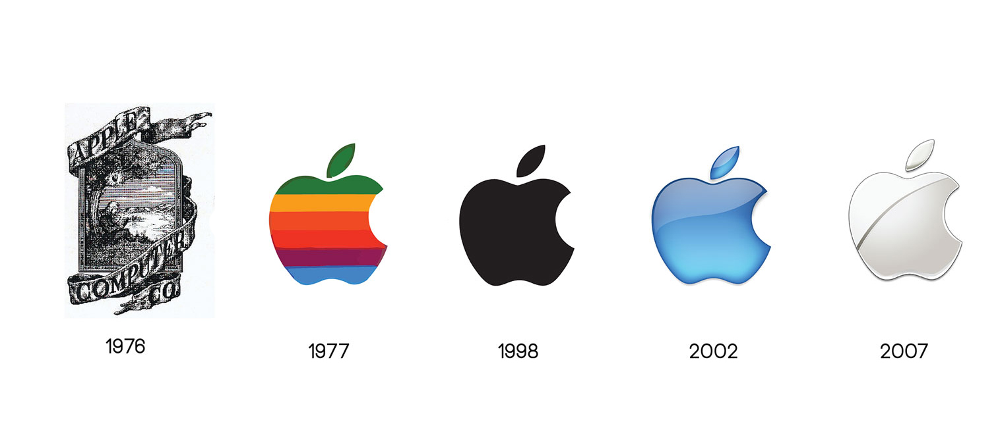

Apple
The apple in this website is not a fruit, instead this Apple is a multimillion dollar company that is headquatered in Coupertino, California. Apple designs and sells electronics and computer software. In this website, I will talk about Apple devices and their history.

Side
History
- Apple was established on April 1st, 1976 by Steve Jobs.
- In 1984, Apple launched the Macintosh, the first personal computer to be sold without a programming language. The Macintosh was the watershed for Apple's success.
- The first version of the iMac was introduced in 1998.
- On October 23, 2001, Apple introduced the iPod digital music player.
- At Macworld Expo on January 9, 2007, Steve Jobs announced the iPhone.
- The iPhone led to the launch of the App Store which let third party companies sell their applications.
- In 2006, apple realeased a laptop called the Macbook.
- On January 27, 2010, Apple unveiled a large screen, tablet-like media device known as the iPad.